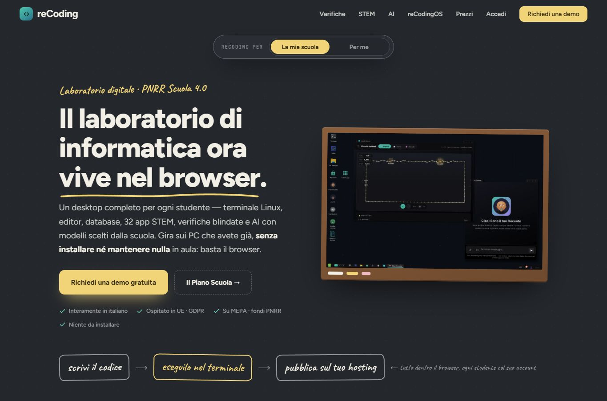
Ingrandisci screenshot
RCWeb app
Scuola
reCoding
Il laboratorio di informatica, dentro il browser.
Un ambiente di lavoro per studenti e docenti che porta il laboratorio di informatica direttamente nel browser. Ogni utente dispone di un desktop a finestre con archivio cloud, terminale e strumenti per scrivere, eseguire e organizzare il codice. La piattaforma affianca alla programmazione laboratori STEM interattivi, applicazioni didattiche e strumenti AI. I docenti possono usarla anche per le verifiche di laboratorio, mentre gli studenti ritrovano file e progetti accedendo al proprio spazio.
- Desktop e archivio cloud
- Strumenti STEM interattivi
- Verifiche di laboratorio e strumenti AI
Ultimo commit GitHub · 30 set 2026
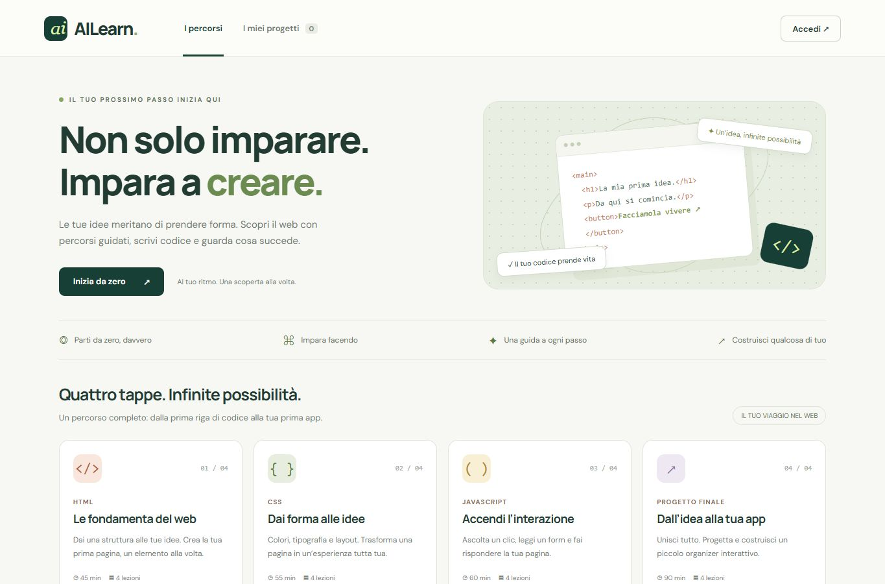
Ingrandisci screenshot
ALWeb app
Scuola
AILearn
Imparare il web, una lezione alla volta.
Pensato per chi comincia a creare pagine web, propone quattro percorsi e sedici lezioni in italiano dedicate a HTML, CSS e JavaScript. Lo studente legge la consegna, scrive nell’editor e osserva il risultato in un’anteprima isolata, con controlli sui requisiti richiesti dall’esercizio. I progetti possono essere salvati nel browser, nel cloud o nello spazio reCoding. Importazione, esportazione e progetto finale aiutano a trasformare le esercitazioni in lavori da conservare e riprendere.
- 4 percorsi e 16 lezioni
- Editor con anteprima e verifica requisiti
- Salvataggio locale, cloud e reCoding
Ultimo commit GitHub · 28 set 2026
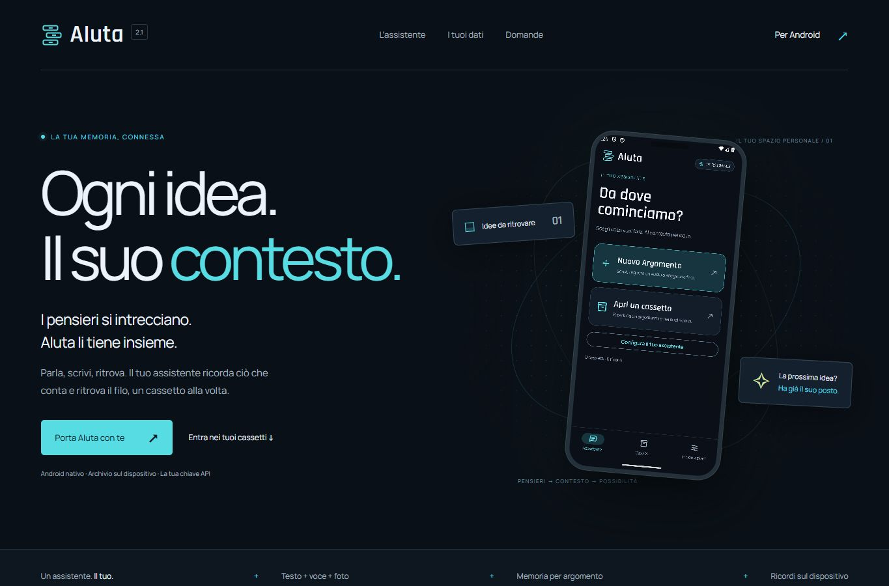
Ingrandisci screenshot
AiAndroid
Produttività
AIuta
Un assistente che ritrova il filo.
Un assistente personale Android che organizza il dialogo in cassetti tematici, così ogni argomento conserva conversazioni e ricordi pertinenti. Si può scrivere, inviare una nota vocale o allegare foto e documenti; l’app recupera il contesto del cassetto selezionato per costruire la risposta. I ricordi restano consultabili, modificabili e ricercabili, e gli scambi possono essere spostati quando la classificazione va corretta. L’archivio è locale ed esportabile; il servizio AI si configura con la propria chiave.
- Chat con memoria per argomento
- Allegati vocali, foto e documenti
- Ricerca ed esportazione dei ricordi
Ultimo commit GitHub · 22 set 2026
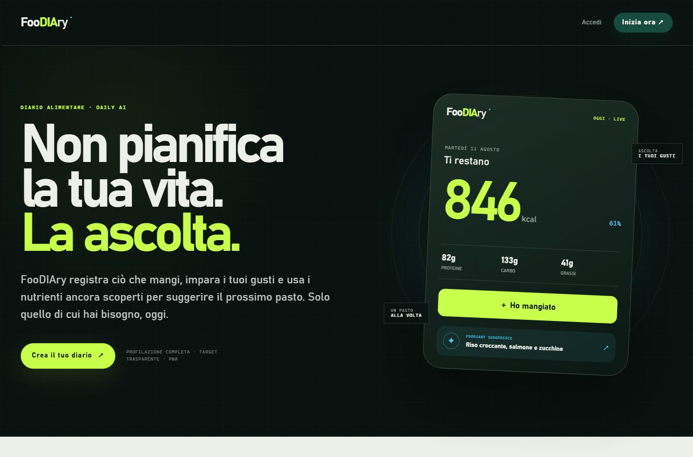
Ingrandisci screenshot
FdPWA
Benessere
FooDIAry
Il diario che parte da ciò che mangi.
Un diario alimentare pensato per seguire le abitudini reali, pasto dopo pasto. La persona registra ciò che mangia e l’app aggiorna il saldo nutrizionale della giornata, mettendolo in relazione con obiettivi, preferenze e storico. Su questa base, l’assistente AI suggerisce il pasto successivo tenendo conto di quanto è già stato consumato. L’interfaccia installabile come PWA permette di tenere il diario a portata di mano e costruire nel tempo una registrazione delle proprie scelte.
- Registrazione dei pasti
- Saldo nutrizionale giornaliero
- Suggerimenti AI secondo gusti e storico
Ultimo commit GitHub · 27 ago 2026
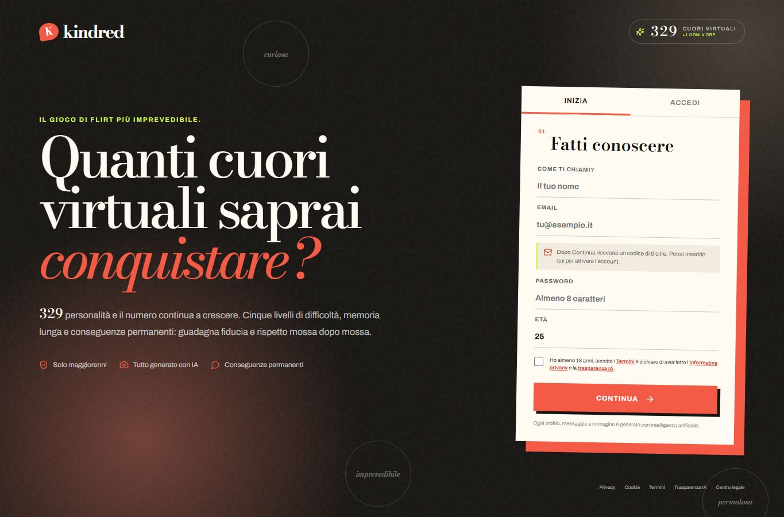
Ingrandisci screenshot
KiPWA
Esperienze
Kindred
Storie virtuali, relazioni da costruire.
Un gioco narrativo installabile in cui tutti i personaggi sono personalità virtuali adulte, dichiaratamente generate da IA. Si esplorano i profili, si apre una conversazione e si costruisce una relazione attraverso scelte che incidono su affinità, fiducia e rispetto. Ogni personaggio ha tratti e limiti propri, con conseguenze persistenti nella storia. La Sala dei cuori raccoglie conquiste e progressi, mentre difficoltà, ricompense e obiettivi stagionali aggiungono una dimensione di gioco alle conversazioni.
- Discovery, match e conversazioni
- Personalità e conseguenze persistenti
- Sala dei cuori e progressione di gioco
Ultimo commit GitHub · 1 set 2026
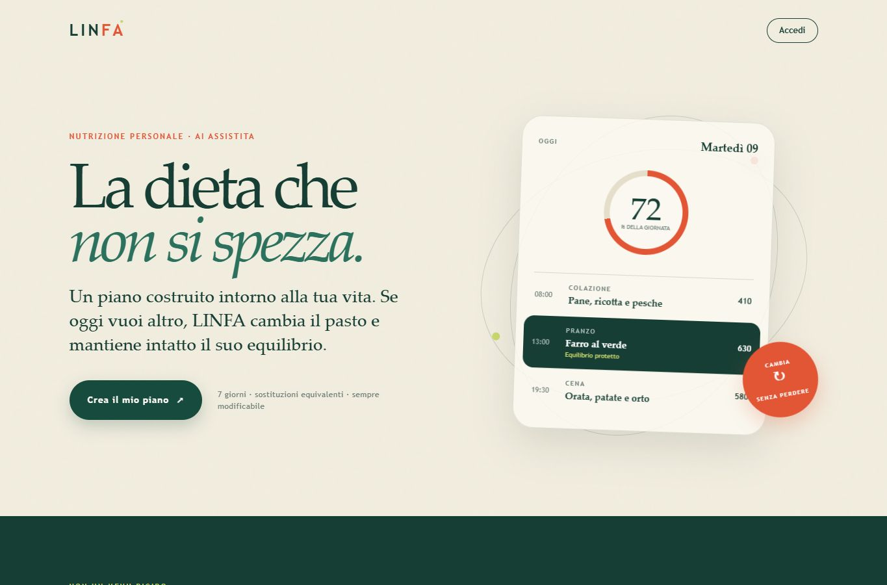
Ingrandisci screenshot
LiPWA
Benessere
LINFA
Una settimana di pasti su misura.
Uno strumento di nutrizione personale che parte da una profilazione approfondita per definire obiettivi e comporre una settimana di pasti con il supporto dell’AI. Il piano può essere adattato sostituendo le proposte, mentre il diario registra ciò che viene effettivamente consumato. Il ribilanciamento tiene conto di questi cambiamenti e viene controllato dal server. La formula PWA rende il percorso accessibile da telefono, con piano, alternative e diario riuniti nello stesso ambiente.
- Piani settimanali assistiti da AI
- Sostituzioni dei pasti
- Diario e ribilanciamento nutrizionale
Ultimo commit GitHub · 10 ago 2026
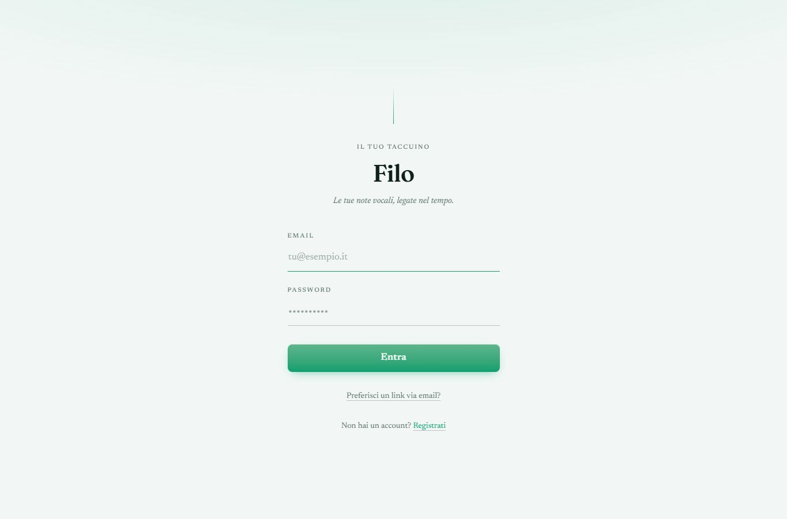
Ingrandisci screenshot
FiWeb app
Produttività
Filo
Le tue note vocali diventano connessioni.
Un taccuino vocale per chi vuole ritrovare idee, persone ed eventi anche quando sono distribuiti in appunti registrati in momenti diversi. Filo trascrive le note, estrae le entità e costruisce collegamenti nel tempo, chiedendo conferma quando occorre risolvere identità ambigue. La ricerca combina più criteri e restituisce risposte con riferimenti alle fonti. Il grafo personale, gli strumenti di analisi e il riepilogo settimanale aiutano a rileggere le informazioni e individuare connessioni da approfondire.
- Trascrizione ed estrazione delle entità
- Ricerca ibrida con risposte citate
- Grafo personale, insight e digest
Ultimo commit GitHub · 22 ago 2026
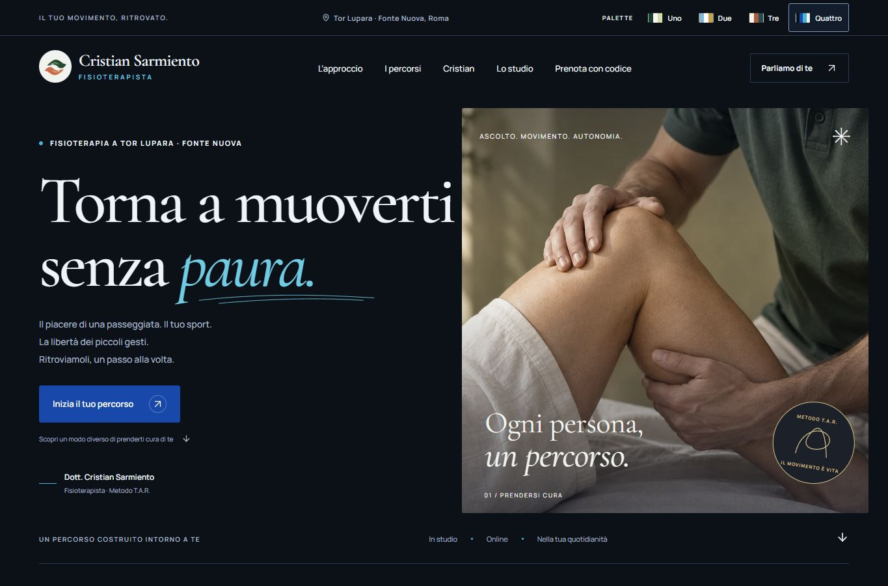
Ingrandisci screenshot
FmWeb app
Benessere
Fisioterapia & movimento
Un unico spazio per lo studio.
Un sito di presentazione e un gestionale realizzati per lo studio di fisioterapia di Cristian Sarmiento. La parte pubblica racconta professionista, approccio e percorsi; l’area operativa supporta agenda, prenotazioni, anagrafiche e schede cliniche. Segreteria e fisioterapista accedono a funzioni distinte in base al proprio ruolo, mentre pazienti e tutori hanno percorsi dedicati alle prenotazioni. Manuali consultabili in HTML e PDF accompagnano le attività quotidiane dello studio e l’utilizzo da parte degli utenti.
- Agenda e prenotazioni
- Anagrafiche e schede cliniche
- Aree riservate e manuali per ruolo
Ultimo commit GitHub · 15 set 2026
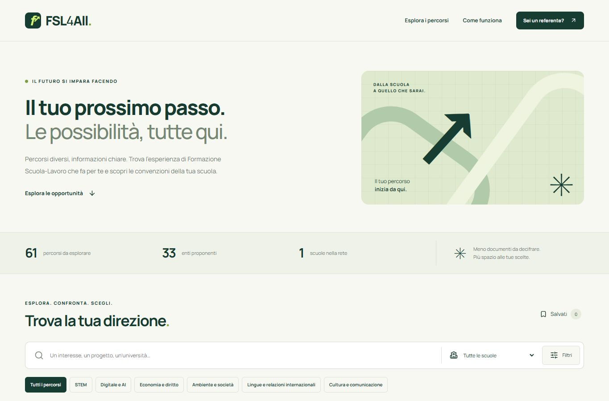
Ingrandisci screenshot
F4Web app
Scuola
FSL4All
Le opportunità scuola-lavoro, a confronto.
Un catalogo pubblico per cercare e confrontare opportunità di Formazione Scuola-Lavoro, con filtri per istituto convenzionato, classe, area, modalità e costo. Si possono affiancare fino a tre offerte, conservare preferiti e stampare o esportare i risultati. I referenti scolastici caricano documenti e collegamenti: l’AI estrae le informazioni in bozze da revisionare prima della pubblicazione. La gestione delle convenzioni e le FAQ supportate dalle fonti completano il lavoro di raccolta e aggiornamento delle proposte.
- Ricerca, filtri e confronto offerte
- Importazione AI da PDF, slide e siti
- Convenzioni e FAQ supportate da fonti
Ultimo commit GitHub · 19 set 2026
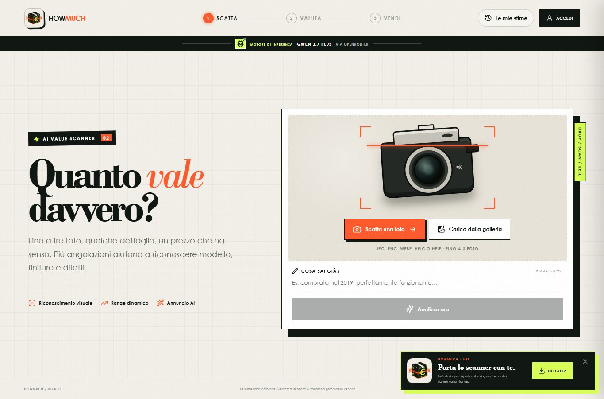
Ingrandisci screenshot
HmWeb app
Business
HowMuch
Dalla foto al valore di un oggetto.
Un percorso guidato per chi vuole capire il possibile valore di un oggetto e prepararlo alla vendita. Si caricano fino a tre fotografie dello stesso articolo, utili a mostrare dettagli, condizioni e caratteristiche riconoscibili. Un questionario adattivo raccoglie le informazioni mancanti e affina l’intervallo di stima. Il risultato comprende una bozza di annuncio modificabile: foto, domande e testo di vendita sono quindi parte dello stesso flusso, con la possibilità di rivedere i contenuti prima di utilizzarli.
- Fino a 3 foto per oggetto
- Questionario adattivo
- Stima e bozza di annuncio
Ultimo commit GitHub · 21 ago 2026
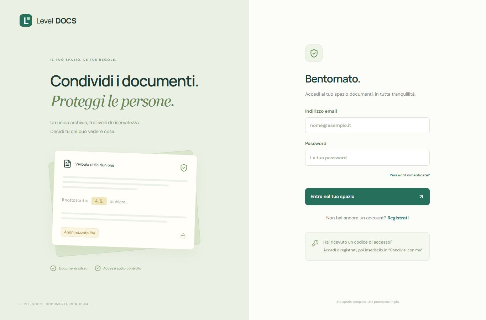
Ingrandisci screenshot
LDWeb app
Produttività
Level DOCS
Documenti, con il giusto livello di accesso.
Uno spazio documentale per conservare gli originali e condividere copie con livelli diversi di riservatezza. Accetta PDF, anche scansionati, file di testo e Markdown, quindi prepara varianti con iniziali oppure oscuramenti dei dati individuati. Il proprietario può correggere le aree selezionate e approvare le copie prima di renderle accessibili agli ospiti. Cartelle, codici di condivisione, scadenze e revoche regolano l’accesso; la gestione dei piani istituzionali permette inoltre di organizzare gli utenti senza rendere automaticamente visibili i loro documenti.
- PDF, scansioni, TXT e Markdown
- Varianti lite e anonima revisionabili
- Cartelle condivise con scadenza e revoca
Ultimo commit GitHub · 30 set 2026
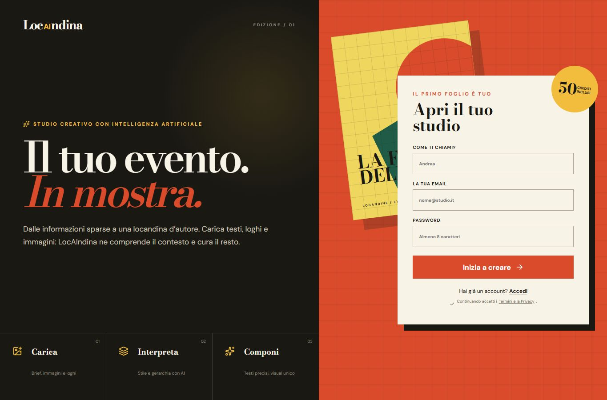
Ingrandisci screenshot
LoPWA
Creatività
LocAIndina
Dal brief alla locandina.
Un laboratorio per preparare locandine verticali partendo da un brief, fotografie, loghi e materiali di edizioni precedenti. L’AI interpreta il contesto e propone una base grafica, mentre testi e marchi vengono composti separatamente per mantenere leggibili date, luoghi e contatti. L’editor a livelli permette di intervenire su forme, allineamenti, tipografia e disposizione degli elementi. Il progetto può essere conservato nell’archivio privato, esportato come immagine oppure animato con tempi e movimenti per ottenere un breve video.
- Riferimenti visivi e vecchie edizioni
- Editor grafico a livelli
- Esportazione immagini e animazioni
Ultimo commit GitHub · 6 set 2026
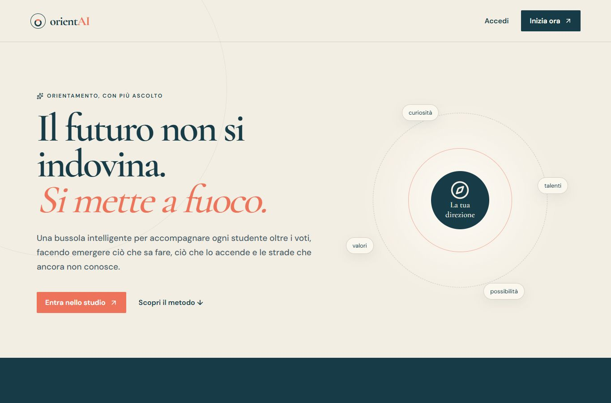
Ingrandisci screenshot
oAPWA
Scuola
orientAI
Dare forma alle possibilità.
Uno strumento per tutor orientatori che vogliono costruire un percorso di ascolto documentato insieme allo studente. Riunisce profili essenziali, voti importati da Excel o CSV e appunti utili al colloquio. L’assistenza AI supporta l’esplorazione di interessi, esperienze e possibili direzioni, producendo mappe di percorsi da discutere e approfondire. I report PDF permettono di raccogliere il lavoro svolto; le proposte restano indicazioni per il confronto educativo e non determinano automaticamente la scelta dello studente.
- Importazione voti Excel e CSV
- Colloqui assistiti da AI
- Percorsi orientativi e report PDF
Ultimo commit GitHub · 4 set 2026
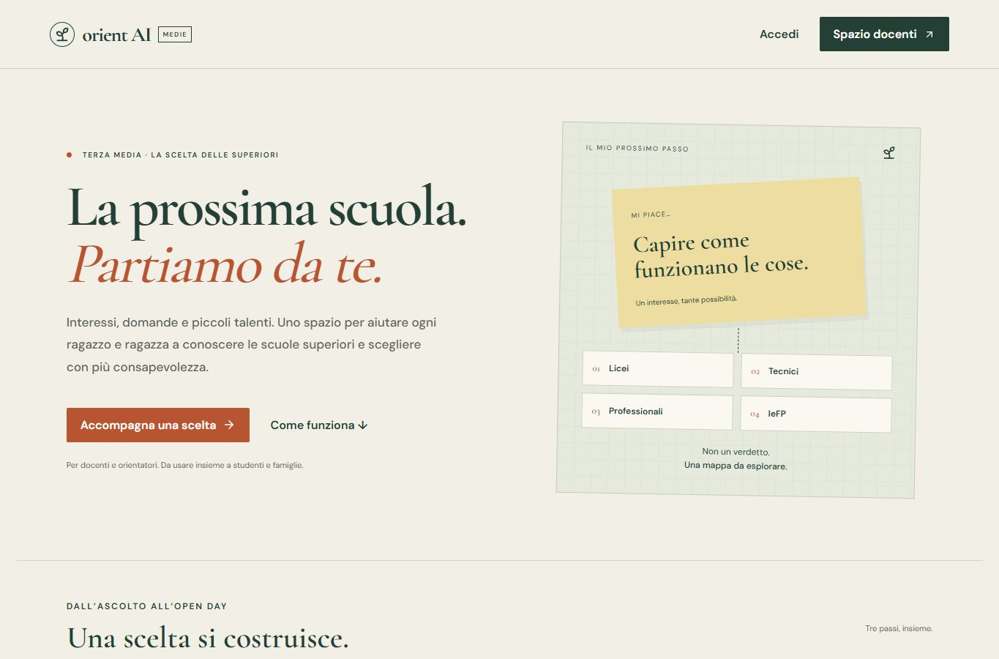
Ingrandisci screenshot
oMPWA
Scuola
orientAI Medie
La prossima scuola si sceglie insieme.
Un ambiente dedicato ai docenti che accompagnano gli studenti di terza media verso la scuola superiore. La scheda orientativa esplora otto aree, fra cui interessi, abitudini di studio, aspettative, dubbi e contesto familiare, integrando voti e colloqui assistiti. Un catalogo di ventotto indirizzi e opzioni permette di cercare alternative e confrontare fino a tre percorsi. Il PDF finale raccoglie evidenze, proposte motivate e domande per gli open day, per sostenere il dialogo con studente e famiglia.
- Scheda orientativa in 8 aree
- Catalogo di 28 indirizzi e opzioni
- Confronto percorsi e PDF per la famiglia
Ultimo commit GitHub · 5 set 2026
Ingrandisci screenshot
IRPWA
Benessere
IRON
Un allenamento che segue i tuoi obiettivi.
Un’app di allenamento che raccoglie livello, obiettivo e dati personali per costruire un piano settimanale con il supporto di un coach AI. Durante la sessione propone un esercizio alla volta e gestisce il tempo di recupero, così la scheda diventa una guida da seguire in palestra. Per ogni attività si può registrare se è stata completata, rimandata o saltata. Il formato PWA consente di installare l’app sul telefono e ritrovare piano e registrazioni nello stesso spazio.
- Piano personalizzato per livello e obiettivo
- Timer dei recuperi
- Registrazione di esercizi fatti o saltati
Ultimo commit GitHub · 28 ago 2026
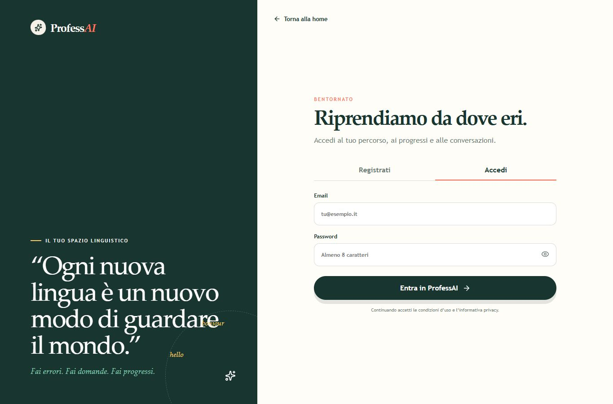
Ingrandisci screenshot
PrPWA
Scuola
ProfessAI
Le lingue si imparano praticandole.
Un tutor per praticare italiano, inglese, spagnolo, francese e tedesco attraverso tre ambienti complementari. Nella stanza di grammatica si lavora sulle regole e sugli esercizi; nella comprensione orale si allena l’ascolto; nella conversazione si dialoga con il tutor usando la voce. Il riconoscimento del parlato permette di inviare risposte vocali e la sintesi sul dispositivo rende ascoltabili quelle del tutor. L’interfaccia installabile come PWA riunisce le attività in un percorso accessibile anche dallo smartphone.
- Grammatica ed esercizi
- Comprensione orale
- Conversazione vocale con il tutor
Ultimo commit GitHub · 30 ago 2026
Anteprima non disponibile
OSSistema operativo
Scuola
reCoding OS
Una nuova vita per i PC della scuola.
Un sistema operativo basato su Debian, progettato per avviare i computer dei laboratori scolastici direttamente sulla piattaforma reCoding. Può essere usato da una chiavetta USB live oppure installato sul disco, con un browser a schermo intero configurato in modalità kiosk. La procedura iniziale aiuta a impostare Wi-Fi, proxy e tastiera, mentre la persistenza USB conserva la configurazione di rete. L’integrazione facoltativa con Veyon e gli strumenti di manutenzione supportano la gestione delle postazioni della scuola.
- Avvio live USB o installazione
- Configurazione Wi-Fi e proxy
- Browser kiosk e integrazione Veyon
Ultimo commit GitHub · 13 lug 2026
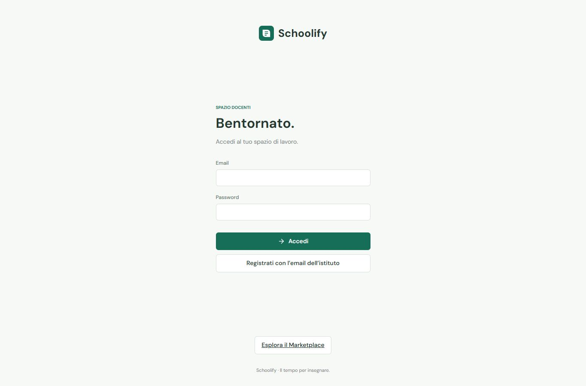
Ingrandisci screenshot
ScWeb app
Scuola
Schoolify
Dalla programmazione alla lezione.
Uno spazio di lavoro per docenti che collega programmazione, materiali e valutazione. Le classi sono organizzate per materia e anno scolastico, con un registro degli argomenti pianificati, in corso e svolti. Le dispense possono essere scritte manualmente o preparate con l’AI, personalizzate ed esportate in PDF, ODT e Markdown; le verifiche gestiscono più tipi di domanda, punteggi e soluzioni separate. Condivisione controllata, marketplace dei materiali e contabilizzazione dei consumi AI completano gli strumenti per il lavoro quotidiano.
- Registro degli argomenti e classi
- Dispense e verifiche con esportazione
- Marketplace pubblico dei materiali
Ultimo commit GitHub · 17 set 2026
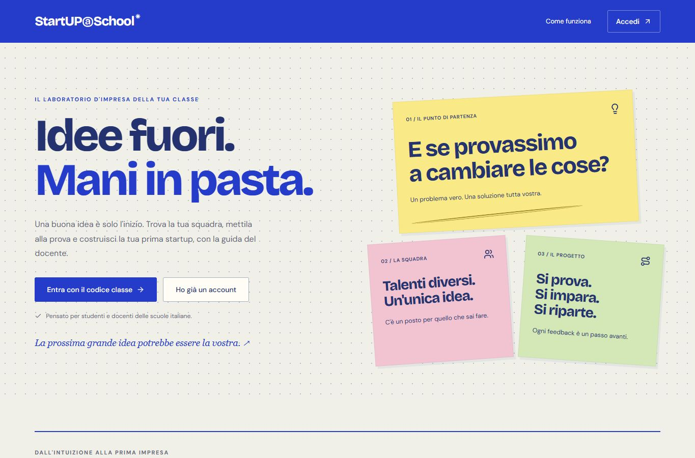
Ingrandisci screenshot
S@Web app
Scuola
StartUP@School
Imparare a fare impresa, facendola.
Una simulazione imprenditoriale per le scuole in cui gli studenti formano un team e sviluppano un’azienda attraverso attività e consegne concrete. Il percorso include recruiting, consulenti AI, scelta della sede e decisioni economiche, all’interno di un calendario simulato. Conti, fatture, stipendi e bilanci si collegano a un mercato con domanda, campagne e imprevisti. Docenti e amministratori dispongono di aree dedicate per seguire il percorso, mentre valutazioni e documenti delle consegne rendono consultabile il lavoro dei gruppi.
- Team, recruiting e consulenti AI
- Bilanci, mercato e tempo simulato
- Consegne, valutazioni e scenari di crisi
Ultimo commit GitHub · 11 set 2026
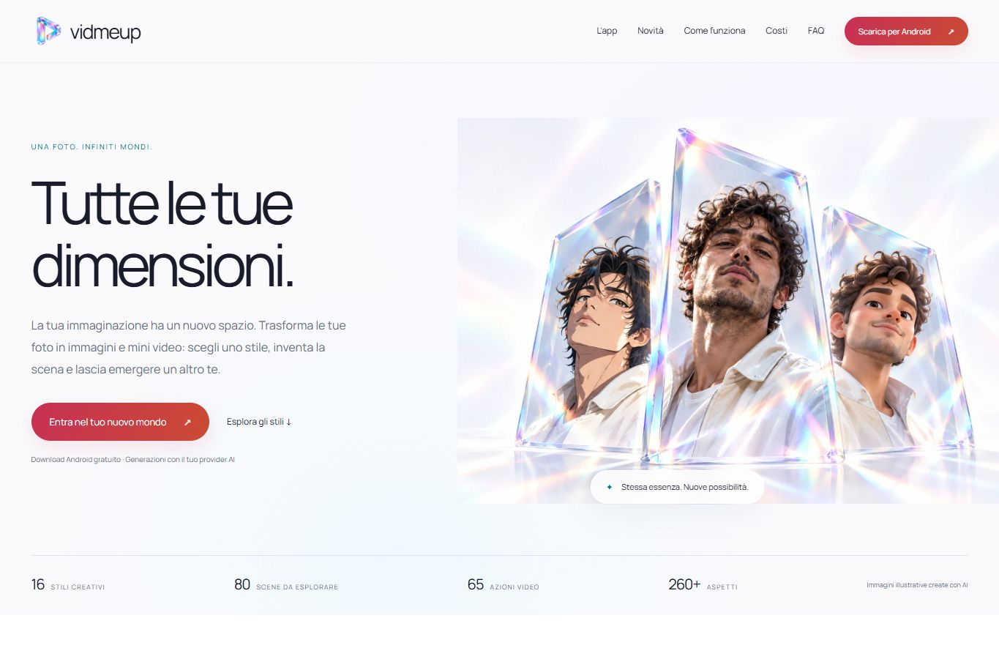
Ingrandisci screenshot
VuAndroid
Creatività
VidMeUp
Le tue idee prendono immagine.
Uno studio creativo Android che parte da fotografie e soggetti di riferimento per generare immagini e mini video. Si scelgono stile, ambientazione, azioni e dettagli; i controlli di regia permettono di specificare il movimento desiderato della camera. Le creazioni possono essere raccolte, ritoccate con istruzioni testuali o usate come base per un’animazione. Biglietti d’auguri, storie e ricette illustrate ampliano i formati disponibili. Il provider AI si configura nell’app, mentre la fedeltà del risultato dipende dal modello utilizzato.
- Immagini, mini video e ritocco
- Scene, stili e controlli di regia
- Biglietti, storie e ricette illustrate
Ultimo commit GitHub · 2 ott 2026
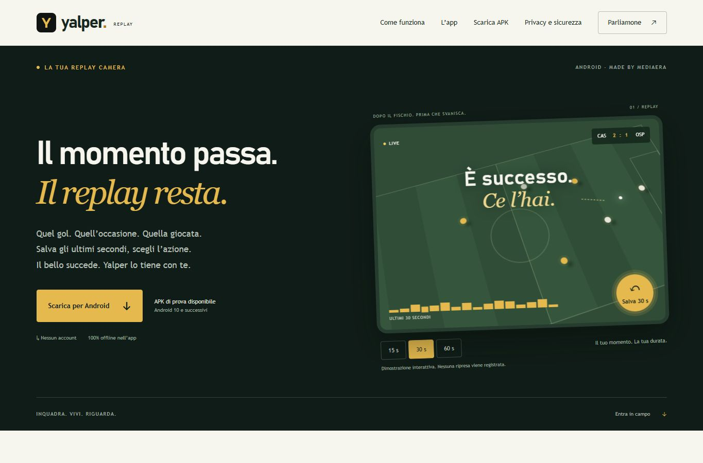
Ingrandisci screenshot
YRAndroid
Sport
Yalper Replay
Il replay è già nel tuo telefono.
Una replay camera Android per conservare un’azione dopo che è avvenuta. Durante la cattura, un buffer mantiene gli ultimi secondi: premendo Salva si sceglie un replay da quindici, trenta o sessanta secondi, da classificare come gol, occasione o giocata. Tabellone, testo in sovraimpressione e impostazioni video personalizzano la ripresa. I file restano sul telefono, organizzati in una galleria per giorno con riproduzione e condivisione. La cattura funziona offline e non richiede un account.
- Replay da 15, 30 o 60 secondi
- Tabellone e sovraimpressioni
- Galleria per giorno e condivisione
Ultimo commit GitHub · 27 set 2026